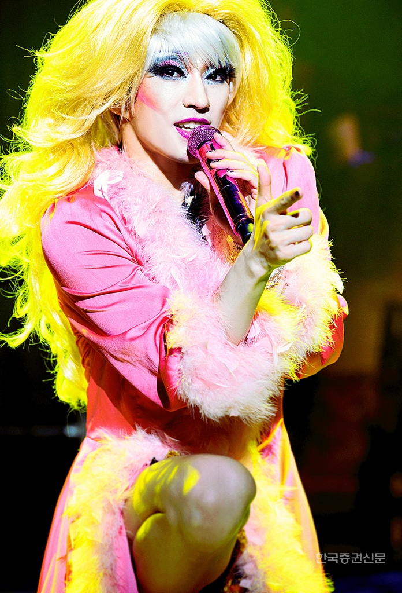

헤드윅이라는 뮤지컬은 나에게 있어 다른 차원과 이어져있는 옷장이었다. 헤드윅을 알기 전 나는 어쩌면 굉장히 편협하고 무지한 상태 그 자체였다라고 말할 수도 있을정도로 헤드윅은 나를 크게 변화시켰다.

단순히 뮤지컬이라는 장르로 나를 이끈것 뿐만아니라 나의 가치관, 나라는 사람에 대해 사고하는 방식, 운명, 사랑, 폭력 세상을 지배하고 있는 다양한 단어들에 대한 정의를 바꿔놓았다.